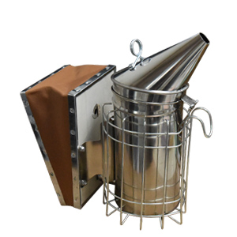
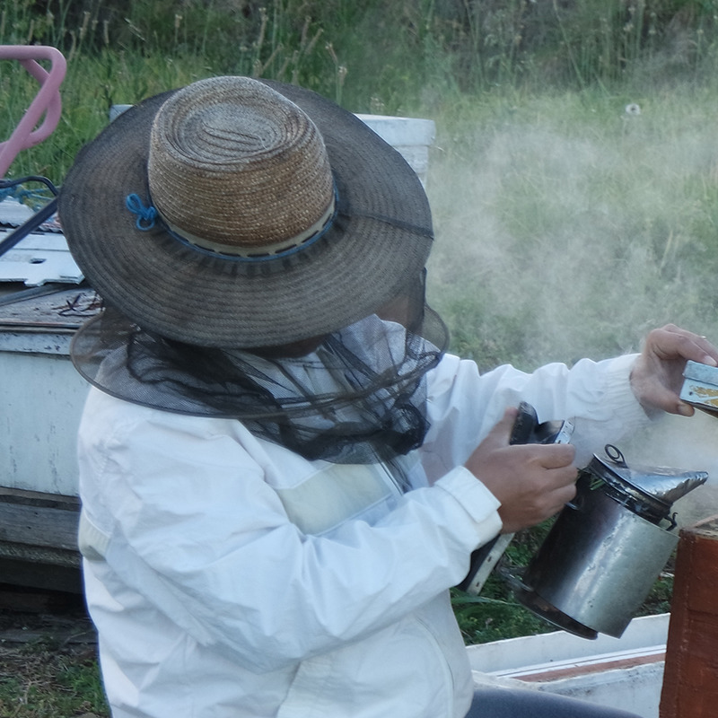

카테고리
제목
작성자
양봉업
양봉업자의 팁
양봉업자

벌통을 확인하실 때 훈연기로 연기를 많이 살포하는 것이 좋다고 생각하실 수 있는데, 연기를 많이 살포하는 것은 좋지 않습니다. 많이 살포하면 벌들의 성향이 공격적으로 바뀔 수 있습니다. 가볍게 2~3번 뿌리는 것이 적당합니다.
 양봉업
전염병이 의심된다면
양봉업자
현재 키우는 벌들이 전염병에 걸렸다는 의심이 든다면 한국 양봉협회 또는 농립수산검역본부 등에 연락하여
상황을 전달하고 전염병이 맞다는 결과가 나왔다면 사용해왔던 모든 용품을 불로 소각하여 전염병을 억제해야 합니다.
특히 전염병 등 여러 문제에 봉착하지 않도록 꾸준한 공부가 중요합니다.
양봉협회 : https://www.korapis.or.kr/jsp/main.jsp
농림수산검역본부 : http://www.qia.go.kr/intro/greet/qia_greeting.jsp